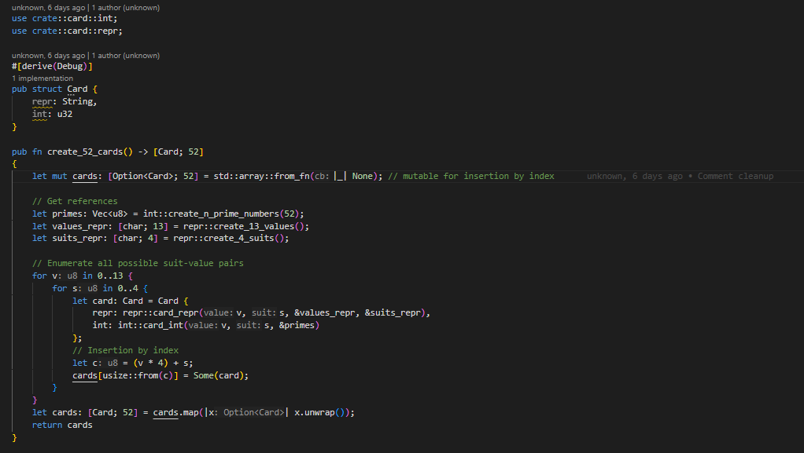
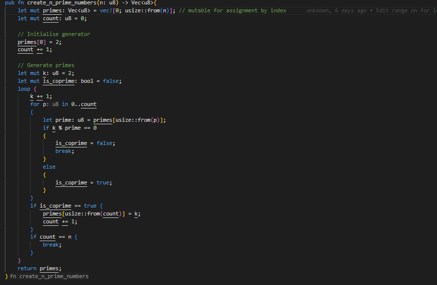
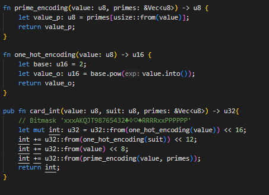
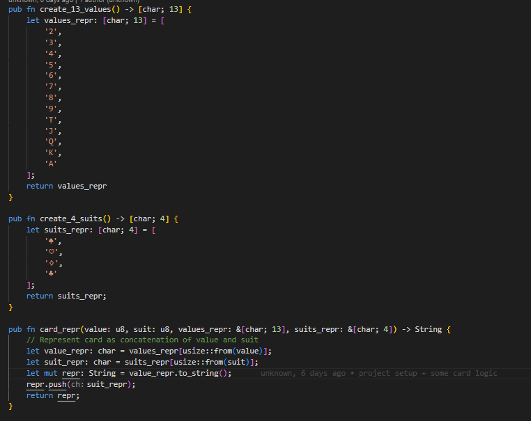
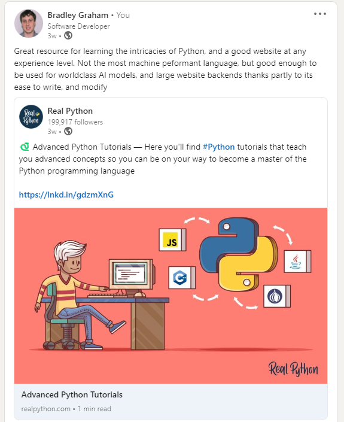
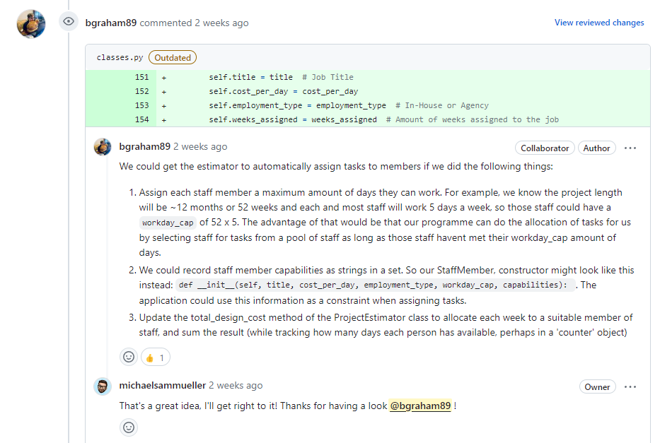

Week 8 & 9
Reading
Weeks 8 and 9 were centred on data structures and software quality. The core reading expanded upon the content of previous modules, but I again I felt these topics were only loosley connected to a software project managers role. It might be beneficial for a software project manger to be familiar with software architecture and code quality to streamline conversion with engineers, but I still believe that it's more advantageous for a project manager to be able to direct problems to the most qualified people when problems are being raised to the them. Without trust in team, the project is more likely to devolve into discontent; a sentiment shared in literature too.
Abeykoon et al's 2020 paper titled 'Data Engineering for HPC with Python' was my favourite paper of week 8. It explored high performance computing with Python, a language not traditionally fitting high performance computing, and I appreciated the effort to extend python with faster data engineering tools. I've been looking into data engineering more closely recently, as it broadly encompases some of my interests, and it plays a massive role in data science, which is another huge domain in computer science. Speaking with work colleagues about high performance computing, I was advised by work colleagues to learn the Rust programming language. So the first project I decided to take on was creating a super fast poker engine, with the intent to train world class poker bots. For that, it's essential to use highly efficient data structures and algorithms, as I will eventually need to simulate a massive amount of poker games. As this is an educational project, it's important for me to maintain good software quality standards too. This is my progress so far, designing and implementing a card struct:
   I touched on Python briefly on a linkedin post too:
In week 9, I found Fitzpatrick's 1996 paper titled 'Software quality: definitions and strategic issues' most interesting for it's clarity. By that, I mean the paper is extremely easy to scan it and pull out key information compared to many other academic papers that prefer density. I understand that the general depth of a topic in academic research necessitates some level of assumption of the readers understanding, but I don't think that's a good excuse to not include contextual prerequisites in an academic paper, to clarify the epsitemological assumptions of the authors too. So I value the inclusion of glossaries in academic research too. It aligns with my values in critical theory, of being detailed, and the social philosophy of science.
Group Project
For the group project I've been gathering requirements and designing systems, drawing on insights of published project managers to make this as simple and effective as possible. I spent some time too reviewing my colleagues code as we had decided to use traditional git branching to collaborate on code. Pull requests are a projects first line of defense against poor quality code.
